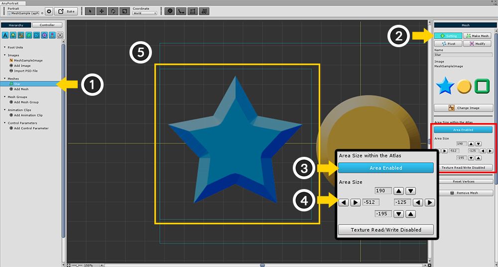
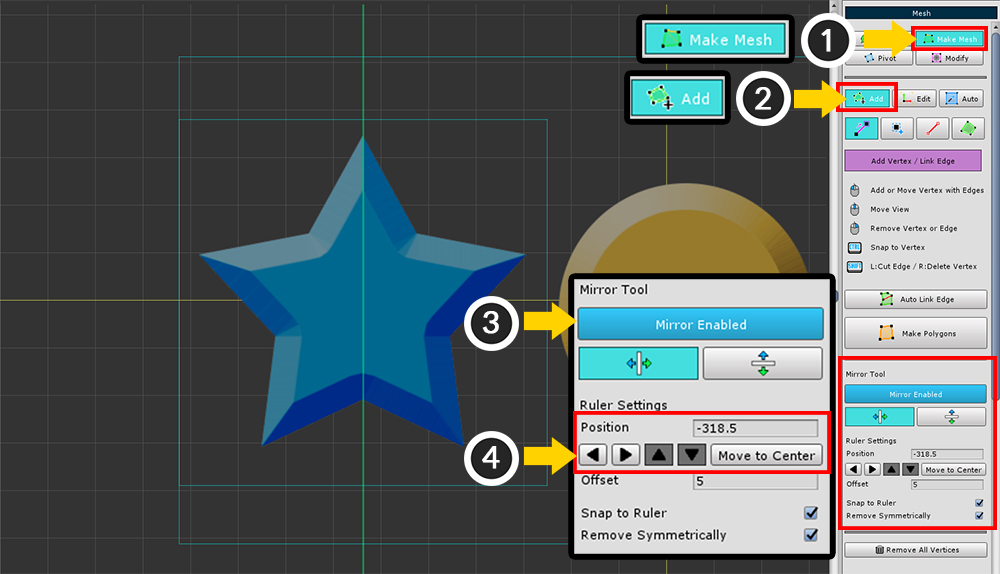
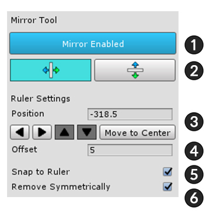
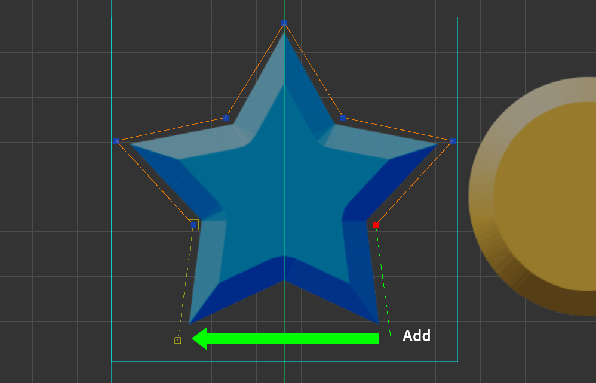
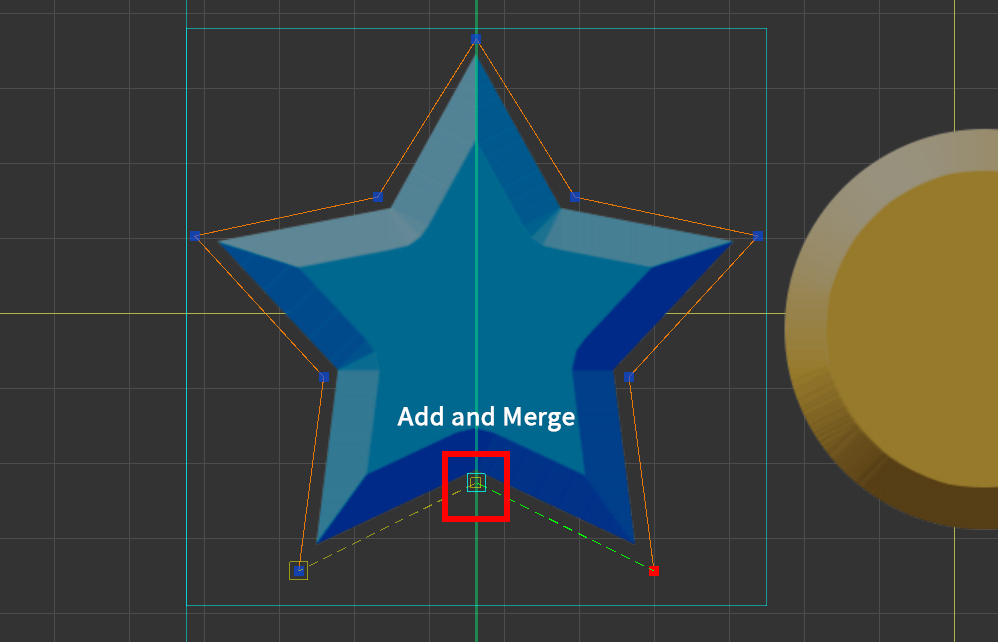
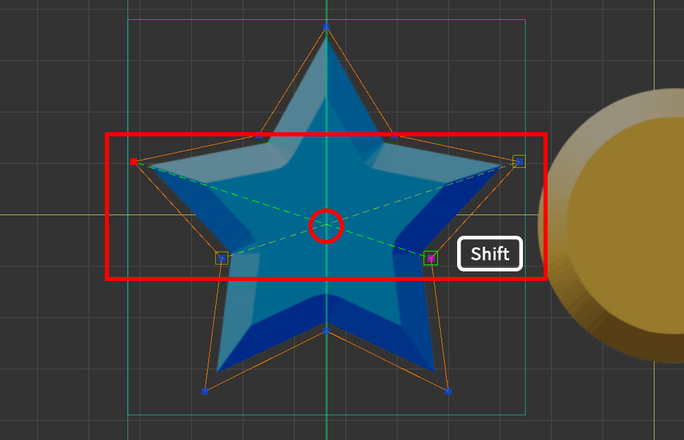
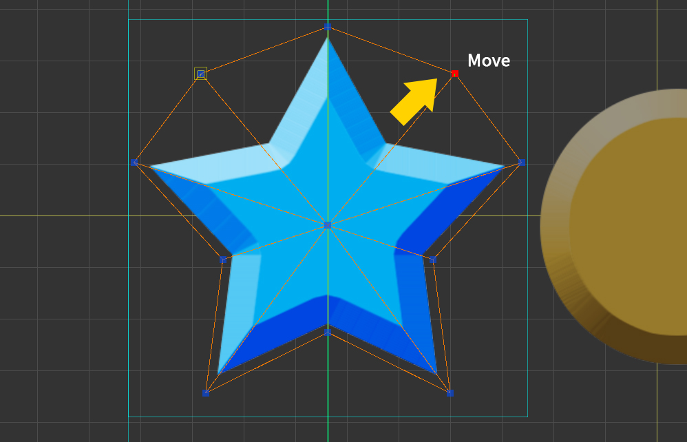
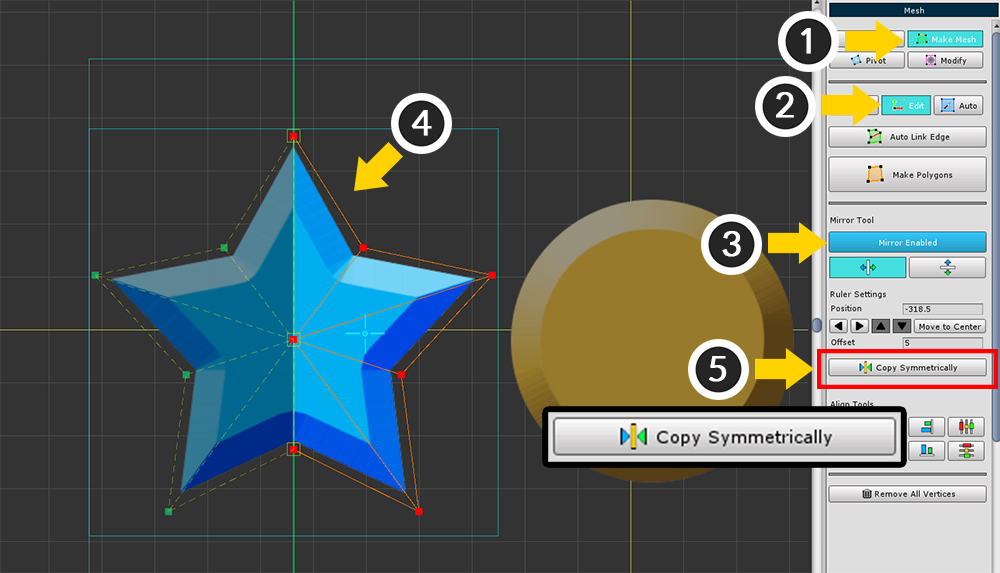

AnyPortrait > Manual > Mirror tool for Making Meshes
Mirror tool for Making Meshes
1.1.0
The Mesh Mirror tool is a feature that allows you to quickly work on images that are symmetrical when creating meshes.
This feature allows you to create a vertex at a symmetrical location or modify its position.
Set the image area and position the mirror axis

(1) Select the mesh.
(2) Select the Setting tab.
(3) Press the Area Disabled button to change to the Area Enabled state.
(4) Set the size of area. You can set it by pressing the Increase / Decrease button or by entering a value directly.
(5) A rectangular area appears in the workspace.

(1) Select the Make Mesh tab.
(2) Select the Add tab.
(3) Enable Mirror.
(4) Set the position of the mirror axis.
You can enter the position value or directly set the position by pressing the increase / decrease button.
If the area has been created in the previous step, you can move it to the center by pressing the Move to Center button.
Because the Mirror tool is a task assistant, mirroring is disabled when mesh editing is complete.
The position or setting value of the mirror axis is retained.
Mirror Tool UI

1. Turn the mirror tool on or off.
2. Orient the mirror axis either vertically or horizontally.
3. Set the position of the mirror axis.
If the image area is set, you can move it to the center by pressing the Move To Center button.
4. When positioning the vertex on the mirror axis, the vertex within the distance of the offset is considered to be on the axis.
5. Snap and place the vertex on the mirror axis.
6. When deleting a vertex, delete the vertices of the opposite vertex as well.
Creating a mesh using the Mirror tool

When you add a vertex, a vertex is added at the symmetry position.

When you add a vertex on the mirror axis, it is created as one vertex that is merged to the mirror axis.

When you press the Shift and create a edge that intersects the axis, a vertex is created at the intersection.

If you move the vertex, the vertex of the opposite vertex will move as well.

If the Remove Symmetrically option is on, when you delete a vertex, the opposite is deleted as well.
Symmetrically copying multiple vertices at once

(1) Select the Make Mesh tab.
(2) Select the Edit tab.
(3) Turn on the Mirror tool.
(4) Select the vertices you want to copy. You can preview the vertices to be copied. (Green vertices and dotted lines)
(5) Press Copy Symmetrically button to copy.